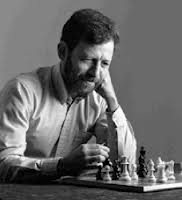

Home » Alumni Weekend » Alumni Weekend 2014 » Events » Ira Fest – in Honor of Computer Science Professor Emeritus Ira Pohl
Ira Fest – in Honor of Computer Science Professor Emeritus Ira Pohl
Saturday, April 26, 9 a.m. – 4:30 p.m.
Baskin Engineering Auditorium, Room 101
Help us celebrate Ira Pohl’s retirement after a 40-year tenure at UC Santa Cruz. Ira guided the development of the Computer Science Department at UCSC, serving as chair for four terms. He was instrumental in launching the popular computer game design major and he most recently served as associate dean for online education. He also initiated UCSC’s membership in Coursera (and recently engaged 60,000 students by teaching the first Coursera C++ course). Ira was honored as an ACM Fellow in 2001 for his outstanding contributions to computer science research and education in the areas of heuristic search, analysis of algorithms, and programming language methodology.
 This event will begin with coffee and refreshments at 9 a.m., followed by the first talk at 10 a.m. This daylong event will feature a variety of fascinating speakers, some of whom have worked directly with Ira, and others who have worked in related areas of particular interest to the UCSC community. Featured speakers will include Peter Kenez, Ellis Horowitz, Martin Hellman, Murray Baumgarten, Dan Edelson, Phil Levy, Richard Korf, Alex Stepanov and other alums, colleagues and collaborators.
This event will begin with coffee and refreshments at 9 a.m., followed by the first talk at 10 a.m. This daylong event will feature a variety of fascinating speakers, some of whom have worked directly with Ira, and others who have worked in related areas of particular interest to the UCSC community. Featured speakers will include Peter Kenez, Ellis Horowitz, Martin Hellman, Murray Baumgarten, Dan Edelson, Phil Levy, Richard Korf, Alex Stepanov and other alums, colleagues and collaborators.
All participants in this event are invited to join us for lunch. The program will conclude with a reception in the Baskin Courtyard from 3:30 – 4:30 p.m.
Visit Professor Ira Pohl’s Faculty Page to learn more about his work.
For more information, please contact Heidi McGough, executive assistant to the dean, Baskin School of Engineering.
- Home
- Photo Galleries
- Events/Registration
- Hotels
- Parking and Shuttles
- Share Your Photos
- Social Stream
Events Schedule
View on mobile/tablet devices or download PDF version
» View Mobile VersionYou can bookmark or add to home screen on your mobile device. » Download PDF Version
Alumni Weekend 2014
Brought to you by:
Special Events Office
Email: specialevents@ucsc.edu
Phone: (831) 459-5003